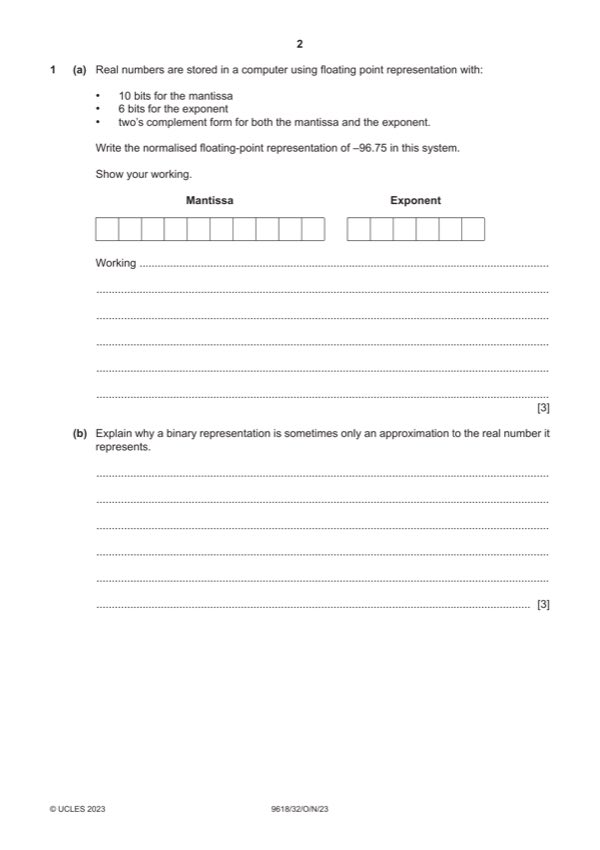

Question 1

Original paper page 2
Part 1(a) — solution
- conversion of −96.75 to binary e.g., positive 96.75, flip the bits + 1 to give
- correct mantissa
- correct exponent
Mark points
- conversion of −96.75 to binary e.g., positive 96.75, flip the bits + 1 to give
- correct mantissa
- correct exponent
Part 1 — solution
0 0 1 1 1 1 1 0 1 0 0 0 1 1 1
Mark points
- Include the ideas shown in the solution above.
Part 1(b) — solution
One mark per mark point (Max 3) 3
MP1 Real numbers (can) have a fractional part (such as 1/3 and ½) / (such
as 0.4 and 0.25)
MP2 The fixed length of the storage means that you can’t store very large /
very small numbers
MP3 Binary numbers represent numbers based on powers of 2, with limited
fractional representations such as 1/2, 1/4, 1/8, 1/16, etc.
MP4 It isn’t possible to store all fractions with the level of precision provided
by this system
MP5 …the fractional part of the number is as close as possible within these
constraints.
Mark points
- Include the ideas shown in the solution above.